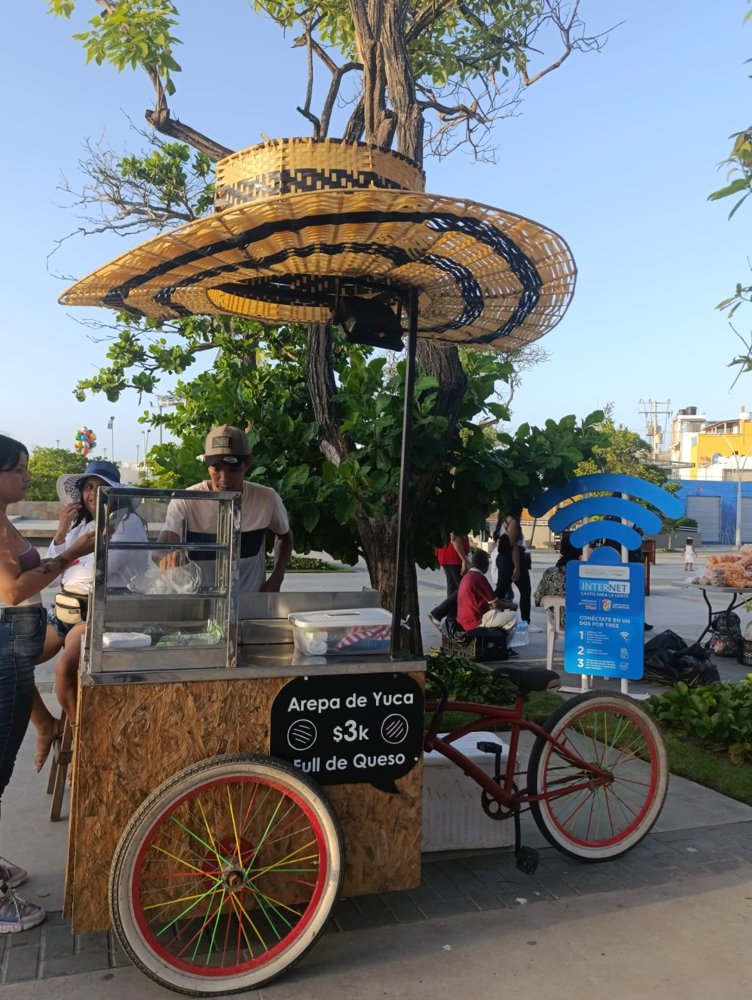
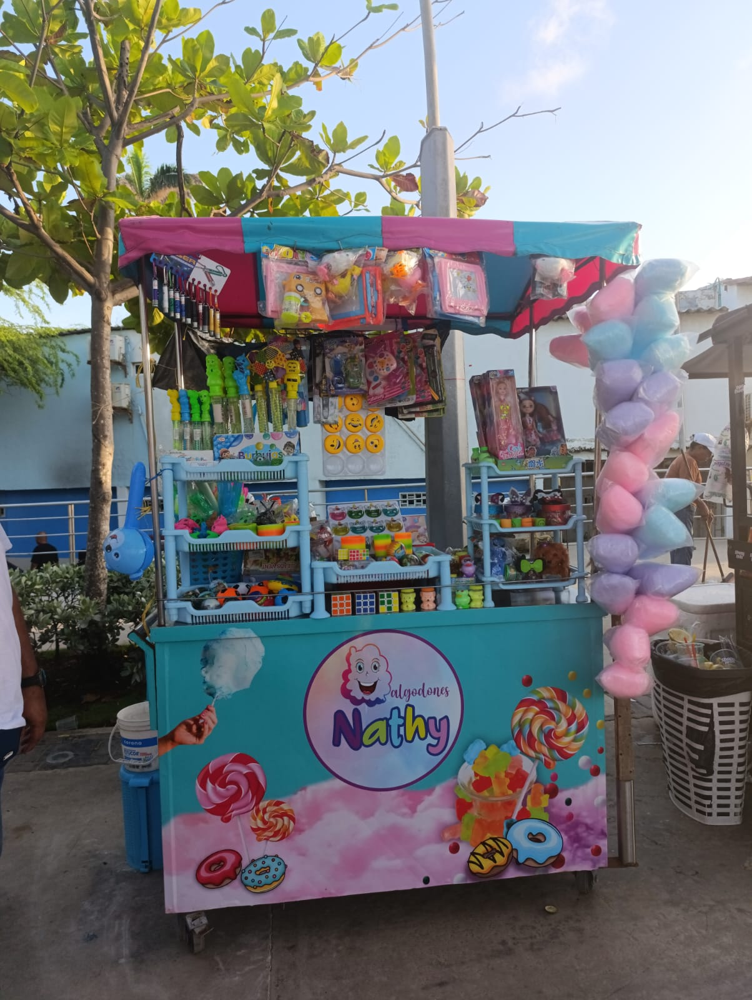
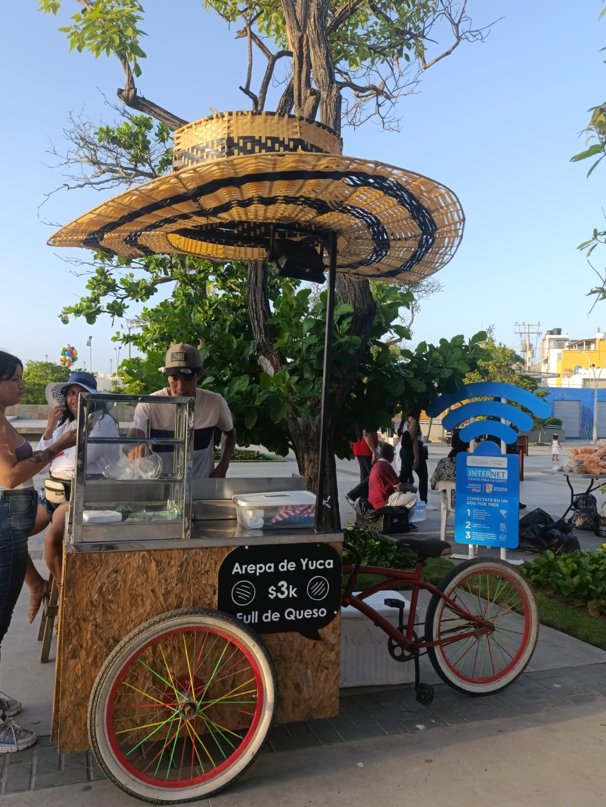
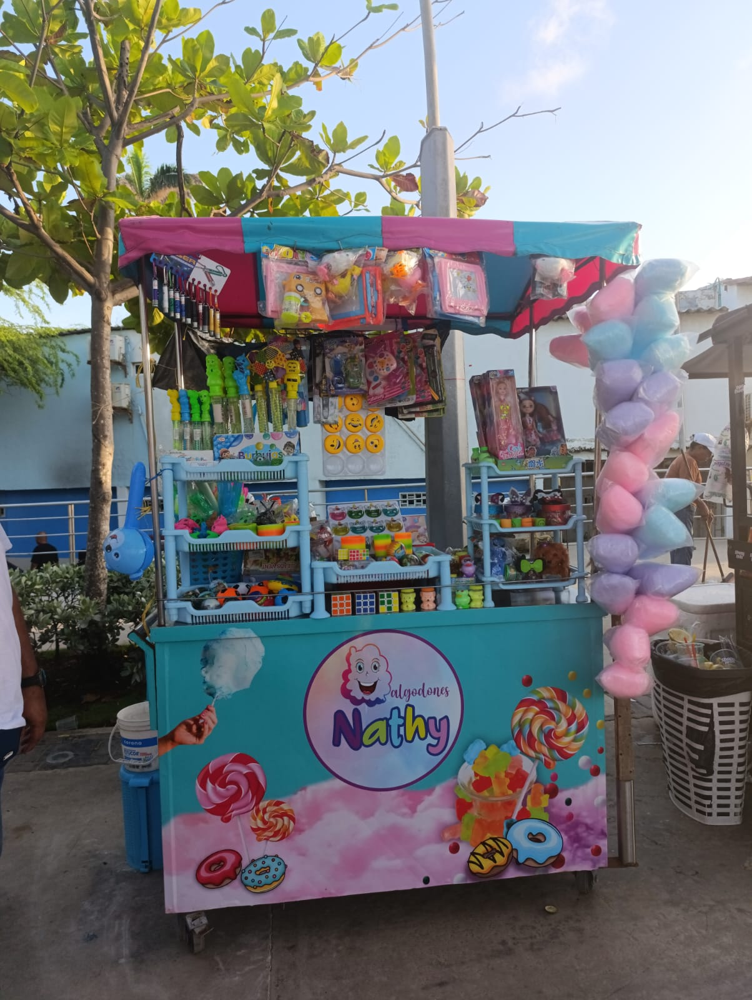
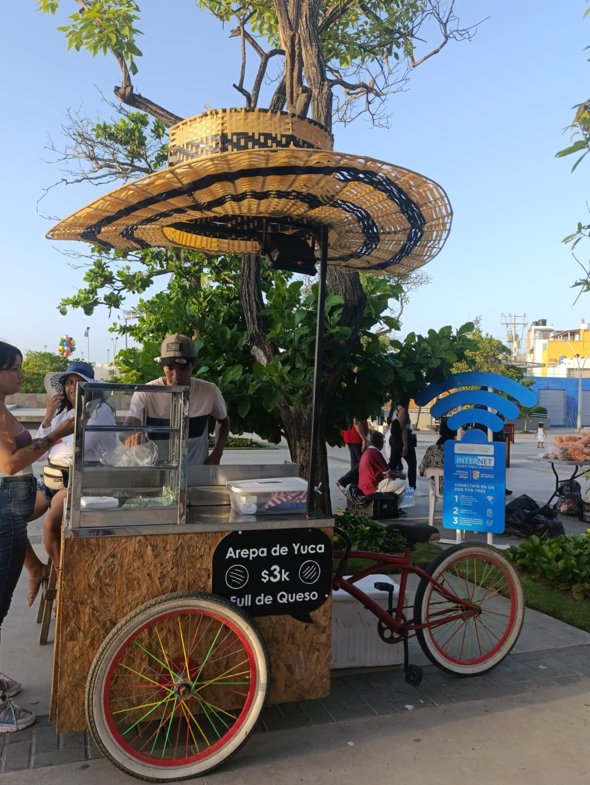
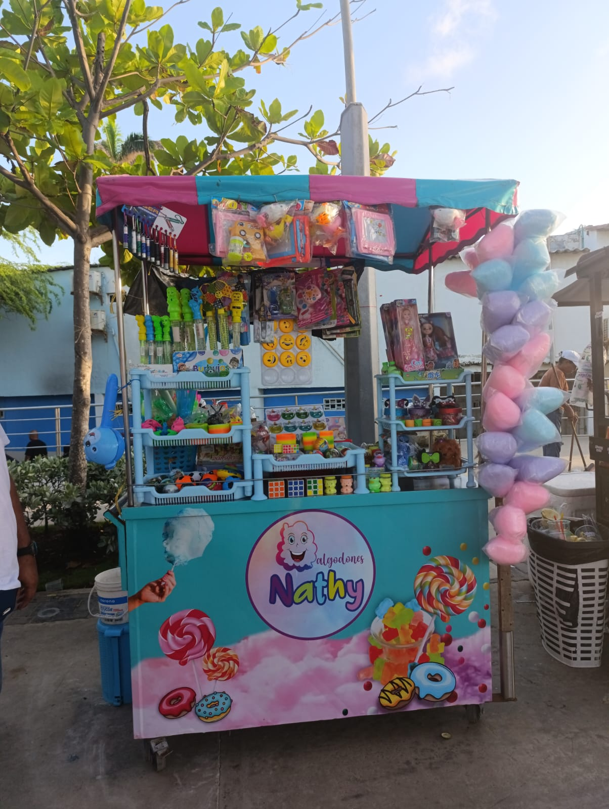

Como turistas, hay muchas formas en las que podemos contribuir positivamente al municipio de Puerto Colombia. Aquí hay algunas maneras clave de hacerlo:


Imagen de los Puestos locales de Puerto Colombia

Imagen de murales de Puerto Colombia